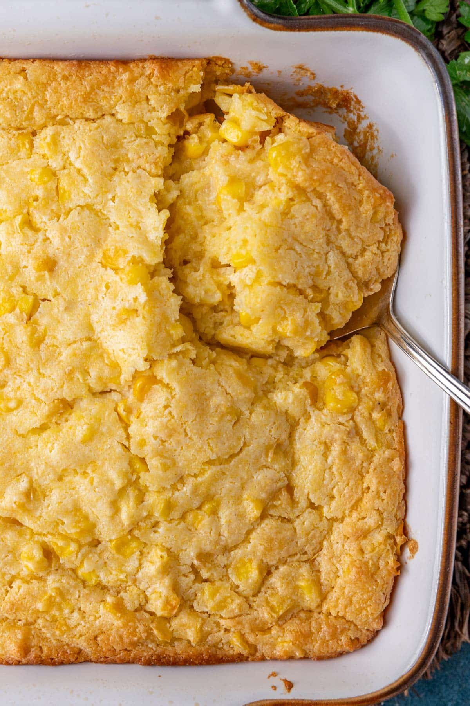

Jiffy Corn Casserole Recipe

So it appears that you want to know the best kept secret for every holiday family dinner.
This corn casserole recipe is truly delicious! It is a fusion between corn soufflé and a slightly sweet corn pudding.
Try this at home! You'll love how easy it is to prepare and you'll love the taste! Best of both worlds!
Necessary Ingredients
- 1 can of corn, drained
- 1 can of creamed corn
- 1 cup of sour cream
- 1 stick of melted butter
- 1 box of Jiffy Corn Muffin mix
- 1 egg
Instructions to Make Corn Casserole with Jiffy Mix
- First preheat an oven to 350°F
- Add all the dry ingrdients to a mixing bowl. i.e can of corn and corn mix.
Note: make sure to drain can of corn if not already drained
- Then add in the wet ingredients to the bowl. You may need to mircowwave the butter to melt it.
- Mix all ingredients well/li>
- Transfer the mixture to a greased 8x8 casserole dish or nonstick pan of your choosing.
Note:You may need a bigger pan if scaling the recipe for more people
- Bake at 350°F for about 45-50 minutes. Periodically check for it to turn light brown
- Enjoy your delicious Jiffy Corn Casserole!